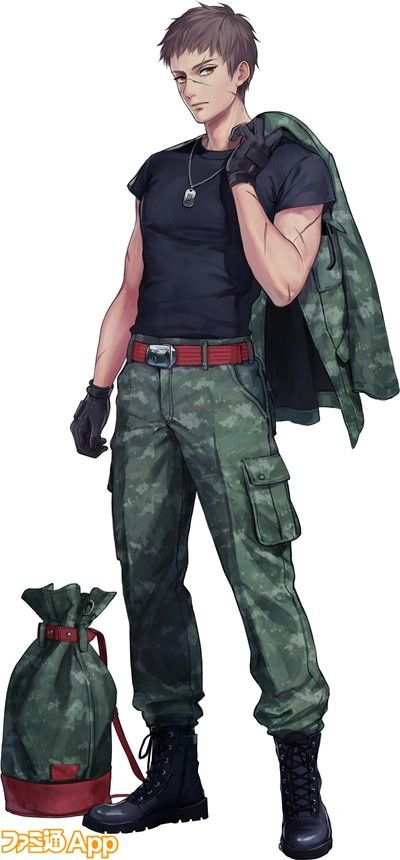

Krieg

Intensificador
Habilidades
- Resistencia mejorada
- Fuerza potenciada
- Rastreo Militar
- Estrategias de combate (Esta ultima suelen ser ignoradas por el mismo Krieg)
Hatsu
El Hatsu de Krieg es "potencia en riesgo":
mientras en mas peligro se encuentre el usuario de Nen,este vera aumentada su capacidad de expulsion y uso del mismo.Siendo capaz
de romper limites que el mismo cuerpo le otorgan para evitar fatiga.El usuario puede usar,asi mismo,elementos exteriores para provocar
este estado.La desventaja es que suele perder el control y estabilidad mental cuando esta sobre demasiada presion,haciendo que los instintos
del mismo cuerpo tomen control de sus acciones
+2 DE FUERZA POR ENEMIGO EN COMBATE DIRECTO CON KRIEG
RECIBE +4 CUANDO ESTA CON MENOS DE 20 DE VIDA
Hoja
>>Nivel:
11
>>Vida
70
°NEN°
11000
---Stats
Fuerza:
+4
Percepcion:
-1
Agilidad:
+1
Aguante:
+6
Ingenio:
-2
Carisma:
-1
SKILLS
- Buscar
0/5
- Combate C/C
4/5
- Comerciar
0/5
- Correr
4/5
- Intimidar
2/5
- Cazar
0/5
- Esconderse
2/5
- Apuntar
2/5
- Hurtar
0/5
- Manejo
0/5
- Medicina
0/5
- Naturaleza
3/5